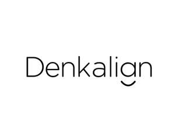

Trade Mark Journal No.2025/010 7 March 2025
UK00004159221 12 February 2025 (3,10,44)
Mark 1
Denkalign
Mark 2

- Class 3
- Dental bleaching gel; Preparations for cleaning teeth; Cleaning preparations for the teeth; Preparations for cleaning the teeth; Dental bleaching gels; Gels (Dental bleaching -); Tooth polishes; Tooth powders; Tooth cleaning preparations; Tooth polish; Tooth powder; Dental polish.
- Class 10
- Teeth aligners; Dental impression trays; Orthodontic brackets [braces] for use in straightening teeth; Collimating position indicating apparatus for dental x-ray machines; Abrasive wheels for dental use; Orthodontic braces; Flexible bronchoscopes; Visible light treatment instruments; Protective mouth masks for dental use; Collimating position indicating apparatus for surgical use; Braces for teeth; Teeth braces; Protective visors for dental use; Interdental brushes for use in dental treatment; Cut-off wheels for dental use; Examination chairs specially made for dental use; Collimating position indicating apparatus for veterinary use; Collimating position indicating apparatus for medical use; Rigid bronchoscopes; Dental bite trays; Bite trays [dental]; Shade guides for dental use; Dental braces; Orthodontic retainers; Dental equipment; Dental intra-oral cameras; Dental moulding devices.
- Class 44
- Teeth whitening services; Teeth cleaning services; Cosmetic dentistry.
DENKA U.K. LIMITED